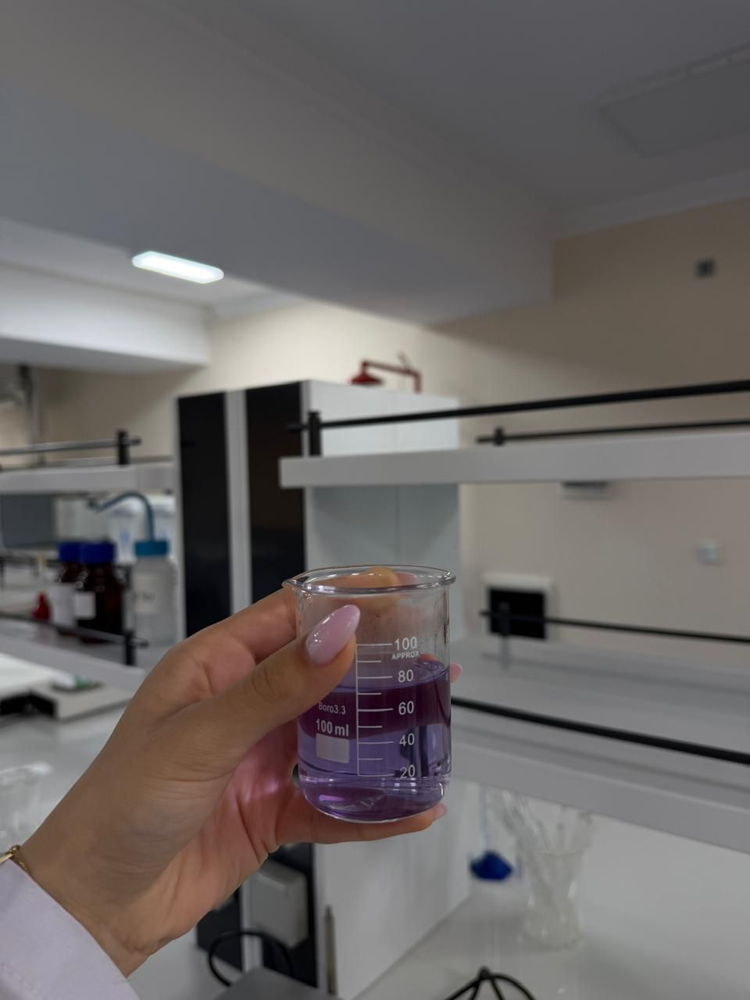
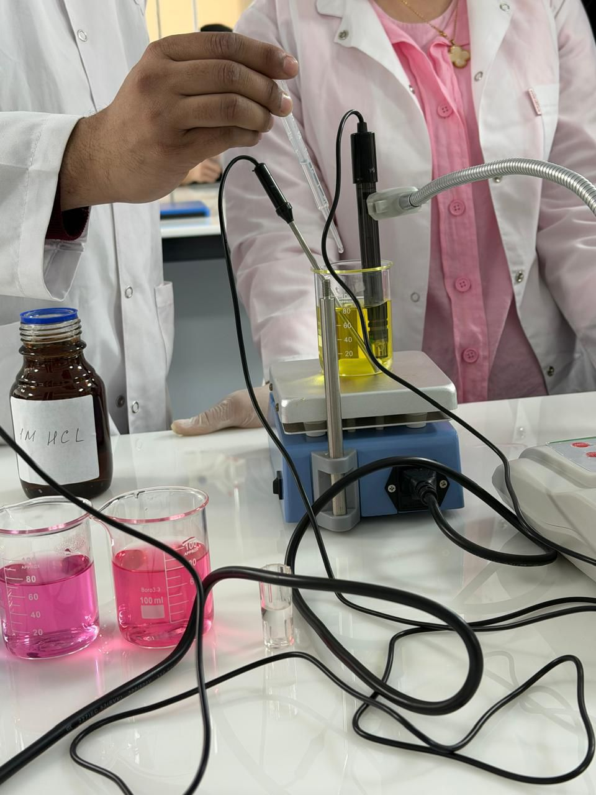

pH İndikatorları ilə Qida Analizi və Mikrobioloji Təhlükəsizlik
Qidanın kimyəvi tərkibini və mikrobioloji təhlükəsizliyini müəyyən etmək üçün pH analizinin rolu danılmazdır. Bu tədqiqatda rəngli indikatorlardan istifadə edərək qida nümunələrinin turşuluq balansı təyin edilmiş, eyni zamanda maqnit qarışdırıcılı qızdırıcılarla istilik müalicəsi aparılmışdır.
Rəngli İndikatorlarla pH Analizi
Analiz prosesinin ilkin mərhələsi müxtəlif konsentrasiyalı məhlulların hazırlanmasından ibarətdir. Şəkildə gördüyünüz rəngli indikatorlar — çəhrayıdan sarıya qədər dəyişən spektr — qidanın turşuluq balansını və tərkibindəki üzvi turşuların miqdarını vizual olaraq göstərir. Bu metod məhsulun raf ömrünü öncədən proqnozlaşdırmağa imkan verir.

Müxtəlif pH dəyərlərinə uyğun rəng spektri — çəhrayıdan sarıya qədər
Güclü turşu
Turşu
Zəif turşu
Neytral
Zəif qələvi
Qələvi
Güclü qələvi
pH skalası — indikator rənglərinin pH dəyərləri ilə uyğunluğu
İstilik Müalicəsi və Zülal Analizi
Maqnit qarışdırıcılı qızdırıcılar vasitəsilə nümunələrin sabit temperaturda emalı həyata keçirilir. Bu mərhələdə qidanın tərkibindəki zülal və karbohidratların istilik qarşısında verdiyi reaksiyalar müşahidə olunur — denaturasiya nöqtəsi, Maillard reaksiyası başlama temperaturu və karamelizasiya həddinin müəyyənləşdirilməsi bu analizin əsas hədəflərindəndir.


Solda: neytral pH zonasında bənövşəyi rəng alan indikator məhlulu · Sağda: titrləmə prosesi
Steril Saxlama və Mikrobioloji Nəticələr
Hazırlanmış nümunələr xüsusi sınaq şüşələrində steril şəraitdə saxlanılır. Aparılan tədqiqatların nəticəsi olaraq qidanın tərkibindəki patogen mikroorqanizmlərin inkişaf riski sıfıra endirilir. Hər nümunə üçün inkubasiya müddəti, mühitin temperaturu və pH dəyəri protokola uyğun qeydə alınmışdır.
Bu elmi yanaşma müasir qida sənayesinin əsas tələblərindən biridir. Sistemli pH nəzarəti və steril saxlama birlikdə tətbiq edildikdə məhsulun mikrobioloji keyfiyyəti uzun müddət qorunur.

Maqnit qarışdırıcılı qızdırıcı ilə sabit temperaturda emal prosesi
Tədqiqatın Əsas Nəticələri
- ✅ Rəngli indikatorlarla pH dəyərləri dəqiq müəyyənləşdirilmişdir
- ✅ İstilik müalicəsi zamanı zülal və karbohidrat reaksiyaları izlənilmişdir
- ✅ Patogen mikroorqanizmlərin inkişaf riski sıfıra endirilmişdir
- ✅ Metod müasir qida sənayesi standartlarına tam cavab verir